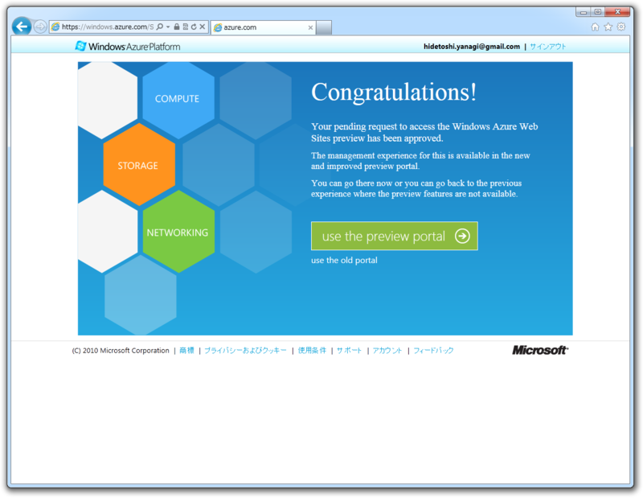

Windows Azure Web Sites でサクッと WordPress をセットアップしてみた
公開日：
Windows Azure Web Sites でサクッと WordPress をセットアップしてみたよ。案外サクッといったので、別に説明することもなかった。 Windows Live ID *1 とクレジットカード *2 が必要になるので、あらかじめ用意しておくこと。
Windows Azure: Microsoft's Cloud Platform | Cloud Hosting | Cloud Services
3ヶ月無償評価版の登録

Windows Azure は3ヶ月無償で利用できるのだそうな。本番ではいくらかかるんだろう……この3ヶ月のうちにシミュレートできるといいのだけど。

本人確認のためにクレジットカードがいるんだって。ここは素直に登録登録。

設定はこれだけ。さっそく［管理］っていうところをクリックしてみる。
HTML5 で作成された Windows Azure の新しいポータル画面

以前までは Silverlight で作られていたという話だけど、新しいプレピューポータルは HTML5 で制作されている。クロスブラウザーでヌルヌル動くのが気持ちいいですね。


ウィザードでチュートリアルが表示される。だいたいの使い方をこれで把握できる感じ。まぁ、実際に使ったほうが覚えるのは早いと思う。ぱっと見わかりやすいしね。
WordPress の設置
さっきのチュートリアルで、新規プロジェクトは左下の［New］アイコンから、と書いてあった気がするのでそれを選択。

まずは［Web Sites］を選択し……
次に［From Gallery］と続き……
ギャラリーの中から WordPress をチョイス。 C# しかわかんないし Orchard CMS も考えたのだけど、まぁ、最初はやはり実績のある WordPress かなぁ、と。ほかにもいっぱいありそうだ。
サブドメインとリージョンの選択。まだアジアのリージョンはないんだな……アメリカ西海岸が無難そうだ。
MySQL サーバーの設定。データベース名は……ほかとかぶらなければなんでもいいんじゃないかな。
できたっぽい。デプロイは1分もかからなかったと思う。

あとは管理者アカウントの設定をすれば、見慣れた WordPress のサイトが現れる。ぶっちゃけ、裏が Windows Azure だってことを意識しなければ、ユーザーインターフェイスがカッコいい普通のレンタルサーバーって感じだ。